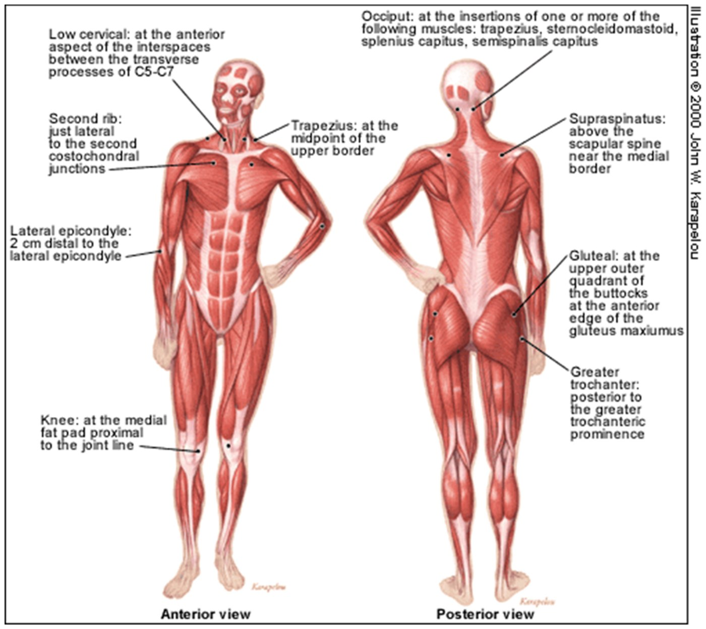
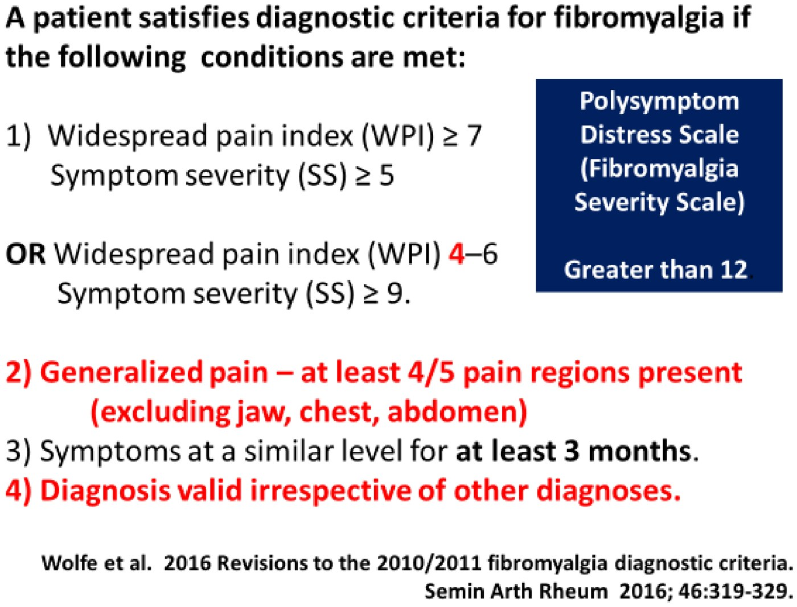
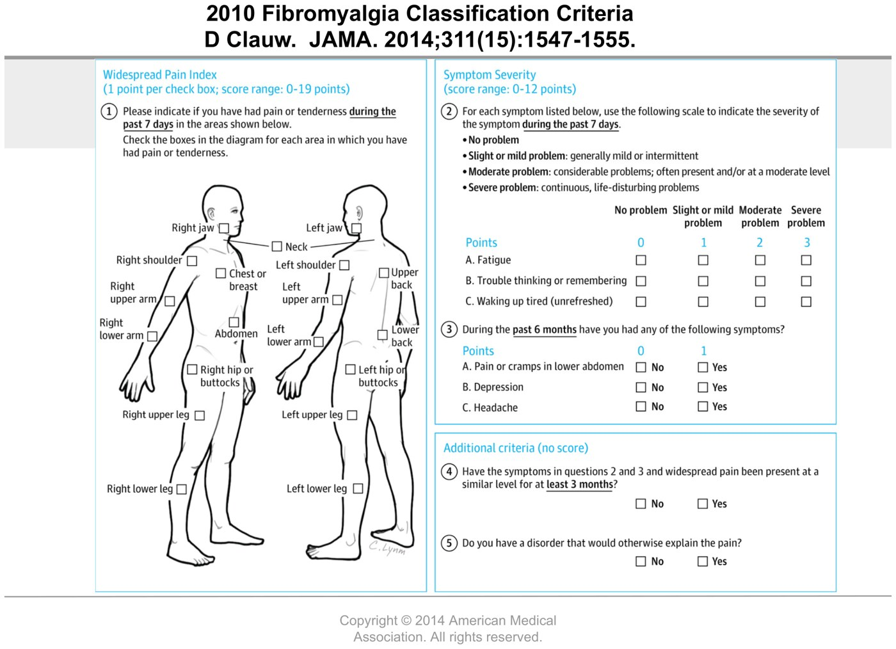
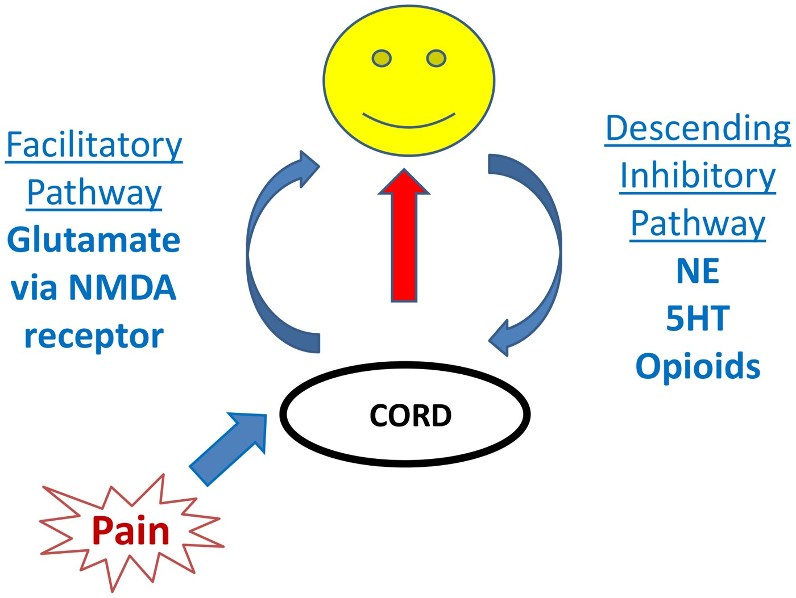
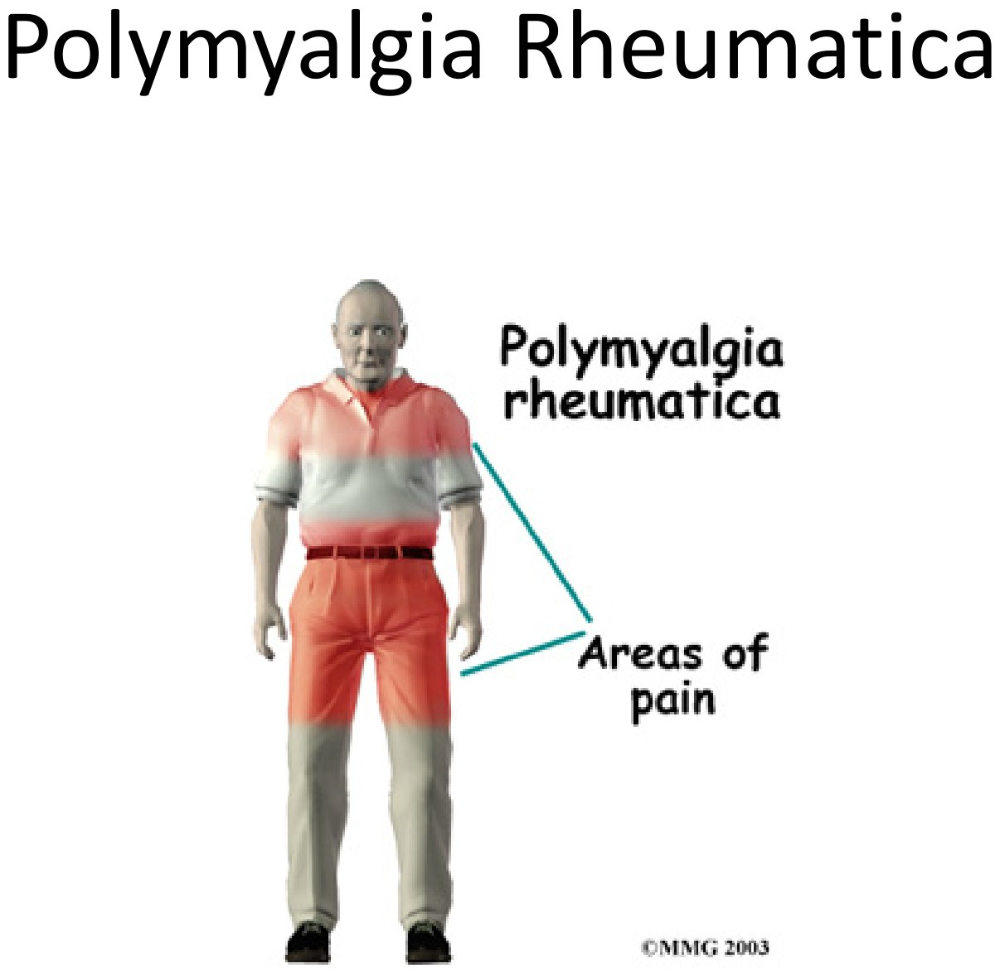
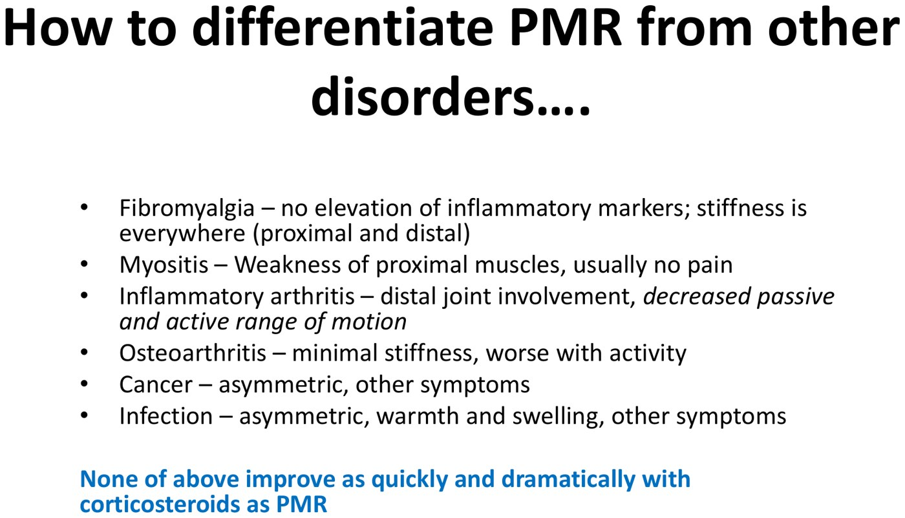

Body Pain: Fibromyalgia and Polymyalgia Rheumatica
- Fibromyalgia = widespread pain > 3 months + somatic symptoms (fatigue, unrefreshing sleep, brain fog) from central sensitization: a disturbance of pain processing, not tissue damage. Normal inflammatory markers.
- Diagnose it with the 2010/2016 ACR criteria: WPI ≥ 7 and SS ≥ 5, or WPI 4–6 and SS ≥ 9; pain in ≥ 4 of 5 regions; ≥ 3 months. It is NOT a diagnosis of exclusion: fibromyalgia + RA/lupus/IBD is common. The family doctor diagnoses and treats it.
- Treat the brain, multimodally: education, exercise (tai chi, yoga), CBT/pacing, sleep apnea and mood; drugs duloxetine (best evidence), pregabalin/gabapentin (help sleep), low-dose amitriptyline. No opioids. Expect 50% of patients to get 30% better.
- PMR = over 50, shoulder and hip girdle pain and stiffness, profound morning stiffness, high ESR/CRP, anemia, thrombocytosis. No weakness: the muscles are normal (the inflammation is in joints and bursae).
- Prednisone 15–20 mg → dramatic relief (90% better in 48 h). A poor response means it isn't PMR: look again. Taper slowly over ~16–18 months; relapses are common. Bone protection if > 7.5 mg for > 3 months. Ask about GCA symptoms (~15% overlap: high-dose steroid).
Learning Objectives
- Create a plan to evaluate and treat non-arthritic body pain.
- Describe the clinical features of polymyalgia rheumatica and an approach to its management.
- Describe the clinical features of fibromyalgia and an approach to its management.
A 40-minute module by Dr. Sabeen Anwar (rheumatology): two recordings (Fibromyalgia 17 min, PMR 9 min) with five knowledge-check cases. Central pain also appeared in Week 10's chronic pain lectures.
Fibromyalgia
Pain everywhere, a normal exam, and normal bloods.
Three Kinds of Pain
| Nociceptive | Neuropathic | Central | |
|---|---|---|---|
| Cause | Inflammation or mechanical damage in the tissue | Damage to peripheral nerves | Disturbance of pain processing → hyperalgesia |
| Sounds like | “My left knee is sore all the time” (focal) | “My arms and legs feel numb, burning” | “I hurt everywhere; it hurts to be hugged; light pressure, lights, noise and smells bother me” |
| Responds to | NSAIDs, opioids, local steroid injection | Local and central drugs | Drugs that change pain neurotransmitters (NE, 5-HT); not opioids |
| Examples | RA, knee OA, acute injury | Diabetic neuropathy, post-herpetic neuralgia | Fibromyalgia, IBS, TMJ dysfunction, tension headache |
Any combination can coexist in one person (Dr. Daniel Clauw's model), and nociceptive pain lasting long enough can centralize.
| Clues that pain is “centralizing” |
|---|
| Diffuse or multifocal; waxes and wanes; often migratory |
| Sounds neuropathic; touch and tight clothing hurt |
| Pain in other body regions earlier in life |
| CNS comorbidities: fatigue, sleep, memory, mood |
| Global sensory hyper-responsiveness (light, noise, odour); a pan-positive review of systems |
Diagnosing Fibromyalgia: the Criteria
| ACR 1990 (“be aware of it, then forget it”) | ACR 2010/2016 (“know it”) | |
|---|---|---|
| Pain | ≥ 3 regions of chronic pain (> 3 months): above and below the waist, both sides, and axial | Widespread Pain Index (WPI): painful regions in the past week (0–19). Generalized pain in ≥ 4 of 5 regions (jaw, chest and abdomen excluded) |
| Exam / symptoms | Tender in 11 of 18 points at 4 kg pressure (until the fingernail blanches); pain, not just tenderness | Symptom Severity (SS): fatigue, unrefreshing sleep, cognitive symptoms + somatic symptoms (0–12) |
| Cut-off | WPI ≥ 7 and SS ≥ 5, or WPI 4–6 and SS ≥ 9 | |
| Duration | > 3 months | Similar level for ≥ 3 months |
| Other diagnoses | Valid irrespective of other diagnoses (2016) |

The 18 tender points (ACR 1990). From the deck.
2016 revision (Wolfe et al.). From the deck.
What It Sounds Like in Clinic
| Domain | What the patient says |
|---|---|
| Fatigue | “I'm so tired I've cut back work and family duties.” |
| Cognitive | “I forget things; I'm in a fog.” |
| Unrefreshed sleep | “Even after 8 hours I wake feeling I didn't sleep.” |
| Boom and bust | “When I feel well I do a lot, then for days I can't do anything. I'm a yo-yo.” |
| Somatic | Headaches; TMJ dysfunction; irritable bowel; irritable bladder (feels like a UTI); non-cardiac chest pain; morning stiffness and hand pain but “the rheumatologist said my joints aren't swollen” |
More common with: any rheumatologic disease, IBD, any psychiatric disease, MS, war or natural disasters, weeks of acute nociceptive pain (MVA, trauma), hepatitis B/C, HIV, Lyme, EBV.
Not a Diagnosis of Exclusion, but Rule Out Mimics
It's common to diagnose FM plus another disease. Treating an RA/SLE/Sjögren's patient's fibromyalgia “features” with immunosuppression does not help those symptoms.
| Complaint | Rule out with |
|---|---|
| Muscle pain | CK (myositis) |
| Neuropathic symptoms | Metabolic workup (e.g., diabetes) |
| Joint symptoms | Exam for swelling |
| Fatigue | CBC, ferritin, TSH, CRP, ALT, creatinine, albumin, sleep study |
| Other somatic complaints | Targeted tests, with common sense |
Don't order an ANA for fatigue and widespread pain alone (12.2).
The Science: Two Pain Pathways

| Pathway | Normally | In fibromyalgia |
|---|---|---|
| Ascending facilitatory (substance P, glutamate via NMDA) | Relays pain up to the brain | Up-regulated: temporal summation (repeated stimuli leave persistent pain after they stop); ↑ CSF substance P and glutamate |
| Descending inhibitory (NE, 5-HT, opioids) | Dials pain down. Diffuse noxious inhibitory control: 2–5 min of intense pain produces whole-body analgesia | Attenuated: DNIC absent (also in OA and IBS); ↓ NE and 5-HT metabolites in CSF; any drug that raises NE and 5-HT helps |
Treating Fibromyalgia
Who? The family doctor: the Canadian guidelines (fmguidelines.ca) say to establish the diagnosis as early as possible without specialist confirmation.
Family doctor, group programs, Arthritis Society, Rheuminfo.com.
Weight bearing and non-weight bearing, tai chi, yoga, warm pool (if available).
Sleep hygiene, pacing (“don't overdo it”), mindfulness for chronic pain.
Mechanical back pain → physio; OA → injections; comorbid RA, IBD, endometriosis.
One drug, lowest dose, titrate slowly, see the patient regularly, set expectations, consider combinations.
| Drug class | Examples | Key point |
|---|---|---|
| SNRI | Duloxetine (best evidence), venlafaxine | Works with or without depression; doesn't help sleep |
| Gabapentinoids | Pregabalin, gabapentin | Help sleep; act on the calcium channel in the ascending pathway |
| Tricyclics (low dose) | Amitriptyline, nortriptyline, cyclobenzaprine | Improve pain, fatigue and sleep; no effect on mood at low dose |
| Opioids | Including Tylenol #3 | No role; avoid. In 1,700 patients, opioid users did worse on sleep, disability and pain interference, with no better pain scores. |
With any of duloxetine, TCAs, pregabalin, exercise, CBT or education: 50% of patients get a 30% improvement. Pregabalin 300 mg/day: NNT 9 for 30% relief, NNT 14 for 50%, NNH 17 to stop for side effects (somnolence, dizziness, weight gain, nausea).
Polymyalgia Rheumatica
Mrs. Avery Smith, 70, active, no medications: 3 months of shoulder pain and morning stiffness, fatigue, poor appetite, 10 lb weight loss. Normal exam. Hb 103, platelets 489, WBC normal, ESR 73, CRP 65.
Who and What

The girdles: neck, shoulders, upper arms, hips and thighs. From the deck.
The mimics. From the deck.| Feature | PMR |
|---|---|
| Age | Over 50 (defining); incidence 15–115/100,000 |
| Who | Women; Northern European descent |
| Symptoms | Insidious pain and stiffness of the shoulder and hip girdles; profound morning stiffness (> 1 h; “a Tin Man who needs oil”, looser by mid-afternoon), fatigue; trouble dressing and getting out of bed |
| Systemic | Weight loss, low-grade fever; ↑ ESR and CRP, anemia, thrombocytosis (reactive; never thrombocytopenia) |
| Exam | Normal apart from pain; no weakness |
| Pathology | Cause unknown. The name misleads: muscles are histologically normal; imaging shows inflammation of the joints, bursae and tendons of the shoulders and hips |
| Mimic | How it differs |
|---|---|
| Fibromyalgia | Normal markers; stiffness everywhere, proximal and distal |
| Myositis | Weakness, usually painless; CK/aldolase high |
| Inflammatory arthritis (RA, PsA) | Distal joints (wrists, MCPs, PIPs, DIPs); ↓ active and passive range |
| OA | Minimal stiffness; worse with activity |
| Cancer | Asymmetric, localized, other symptoms |
| Infection | Asymmetric, warmth and swelling (e.g., one septic joint) |
None of the mimics improves as fast and as dramatically with prednisone as PMR. Avery took 20 mg and felt almost normal in 12 hours. Mr. Jones (64, back and thigh pain, fevers, ESR 54) was only 10% better after a week → the diagnosis is probably wrong: investigate other causes (don't increase the dose or wait longer).
Treating PMR
| Phase | Dr. Anwar's regimen |
|---|---|
| Start | Prednisone 15–20 mg/day (by patient size). Expect ~90% better in 48 h. |
| Hold | Until the patient feels well and the markers normalize (usually 1–2 months) |
| Wean | 15 mg × 1 month → 12.5 mg × 1 month → 10 mg × 1 month → then −1 mg per month |
| Total | 16–18 months for most; average ~2 years; some need low dose long term; relapses are common |
| Don't forget |
|---|
| Reassess for other causes; never treat raised markers alone. Keep cancer screening (colonoscopy, mammogram) up to date. |
| Steroid side effects: GI upset, reflux, insomnia, weight gain, mood change, bone loss (but not joint swelling; steroids can cause generalized edema). |
| Osteoprotection for anyone expected on > 7.5 mg for > 3 months: calcium 1,500 mg elemental/day, vitamin D 1,000–2,000 IU/day, an antiresorptive (e.g., denosumab, risedronate); update the bone density. |
| GCA occurs with PMR in ~15%: headache, jaw claudication or visual symptoms → high-dose prednisone (11.7). |
Practice Patients
1. Mrs. Peterson has rheumatologist-diagnosed fibromyalgia. Which is NOT acceptable: gabapentin, duloxetine 60 mg, Tylenol #3 PRN, amitriptyline 10 mg qhs, tai chi?
Answer
Tylenol with codeine: opioids have no role in fibromyalgia.
2. Jeannette, 34: 6 months of generalized aches, “swollen” hands, dry eyes and mouth, profound fatigue, unrefreshing sleep, IBS and headaches. ANA 1:2560, RF 300, anti-Ro positive. WPI 8, SS 6.
Answer
She has an autoimmune disease that needs workup (Sjögren's, RA or another CTD) and fibromyalgia (WPI ≥ 7 + SS ≥ 5, > 3 months). FM is not a diagnosis of exclusion.
3. Maria, 53: since an MVA 5 years ago, worsening whole-body pain; flinches at light touch; normal sensation, no swelling; Percocet helps a little.
Answer
Central pain = a disturbance of pain processing. It responds poorly to opioids and isn't peripheral nerve damage.
4. Mrs. Abbey, 74: neck, shoulder and back stiffness for 3 months, 5 lb weight loss, Hb 112, platelets 79, ESR 103, CRP 78. Which is NOT a PMR feature?
Answer
Thrombocytopenia. PMR causes a reactive thrombocytosis; a low platelet count should send you looking elsewhere.
Built from Dr. Sabeen Anwar's “Body Pain” deck, her two recordings (Fibromyalgia, Polymyalgia Rheumatica) and the module's five cases. The PMR case's patient photo is left out. Notes: the recording says pregabalin NNH “70” (the slide says 17) and WPI “greater than seven” (the criteria say ≥ 7); it also swaps the two criteria sets for a moment (“know the 1990, forget the 2010”), but the slide says the reverse. The page follows the slides. Dr. Boyd's PMR regimen in 12.1 tapers faster; the long taper here is Dr. Anwar's.